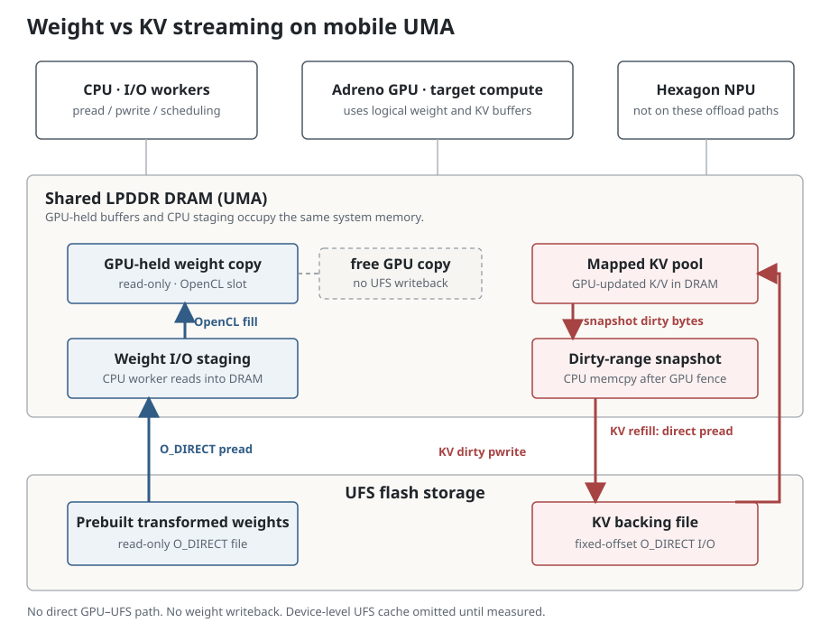

Memory-constrained inference on a phone
The question
When a foreground app reduces the memory available to a background LLM, which part of its target model should leave GPU memory: weights or the K/V cache? Both can be streamed from flash, but the cost that remains on the model's critical path depends on when each layer needs its data.
I compared two fixed offload selections on a Galaxy S25. They saved nearly the same amount of GPU allocation, yet their relative speed changed with the balance between prompt processing and token generation. These measurements are a controlled starting point, not a dynamic eviction policy.
Weight versus KV streaming
Weight streaming drops read-only GPU copies of selected layers and rereads their
tensors from a warm O_DIRECT cache. KV streaming instead writes dirty
K/V pairs to an O_DIRECT backing file and prefetches their valid
contents before those layers compute. Unlike weights, KV must pay for writeback;
unlike a full weight tensor, its valid contents grow with context length. Both
paths try to overlap flash traffic with other target-layer computation.

On Qwen3-4B-Q4_0 with a DFlash drafter and 8K configured context, I streamed 11 distributed weight layers; the KV arm streamed 16 distributed K/V layer pairs through a 96 MiB GPU pool. In the repeated 3.5K-prompt runs, those choices saved approximately 425 and 420 MiB of KGSL GPU allocation, respectively. The selection was static; no memory-shortage value was supplied to the runtime.
Workloads: a 3,528-token technical input on transformers and speculative decoding, summarized in exactly three sentences (65 output tokens); and a 2,049-token input on the same topic, answered as a 12-section explanation capped at 192 tokens. Both used temperature 0; prompt length and requested response format changed together.
In the 3.5K-prompt case, KV's 0.41 s decode gain was outweighed by a 2.45 s prefill loss, so weight won the full request. In the 2K-prompt case, KV's 1.57 s prefill gain outweighed a 0.67 s decode loss, so KV edged ahead. The latter had a shorter prompt, not a longer context: this is a workload-dependent observation, not evidence that long context favors KV.
To do next
These runs matched GPU allocation, not an enforced whole-DRAM shortage. The current event simulator also misses the observed weight-versus-KV winners. The next goal is a calibrated model, rather than exhaustive on-device measurements across every memory budget.
-
Map UFS cache and sustained I/O. Write cumulative,
aligned
O_DIRECTdata to distinct extents at realistic KV sizes, then measure refill reads. Locate any fast-write-buffer knee, tail-latency jump and recovery after idle; test mixed reads/writes, temperature and free-space effects. Do not assume one fixed cache size or infer it from short-run medians. - Trace the actual overlap. Timestamp target-layer compute, weight read and GPU upload, KV dirty-write and refill enqueue/completion, prefetch readiness and demand waits. Collect these timelines for both prefill batches and speculative verification at a few context lengths and verification widths.
- Validate, then select. Freeze the model and test a small set of unseen natural prompts, static memory budgets and weight/KV/mixed selections. Compare predicted prefill, decode, exposed stalls and the winning policy. Add foreground I/O and thermal contention before using it as a dynamic eviction rule.